No se encuentran resultados con esta búsqueda.
PELÍCULAS
John Wick 1

La ciudad de New York se llena de balas cuando Jhon Wick, un exasesino a sueldo, regresa de su retiro para enfrentar a los mafiosos rusos, liderados por Viggo Tarasov, que destruyeron todo aquello que el amaba y pusieron precio a su cabeza.
John Wick 2

El legendario sicario Jhon Wick abandona su retiro cuando, debido a un pacto de sangre que le vincula a un colega, se ve obligado a viajar a Roma para enfrentarse a los asesinos más pegrilosos del mundo y aniquilar a una oranización secreta.
John Wick 3

El legendario sicario John Wick es perseguido por las calles de Nueva York. Lo buscan unos mercenarios por una recompensa de 14 millones de dólares por su cabeza y por romper con una regla.
John Wick 4

El marqués Vincent de Gramont pretende matar a John Wick para afianzar su poder en la Orden Suprema. Sin embargo, John tratará de adelantarse a cada uno de sus movimientos hasta lograr enfrentarse cara a cara con su peor enemigo.
Lucy
Lucy, una joven que ejerce de "mula" para unos narcotraficantes, adquiere poderes sobrenaturales tras romperse una de las bolsas de droga que transporta y absorber los estupefacientes.
Sin Limites
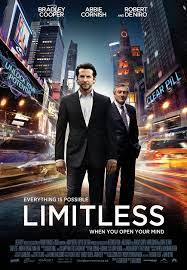El escritor Eddie Morra se enfrenta al desempleo, al rechazo de su novia y está convencido de que no tiene futuro. La situación cambia cuando un amigo le presenta la MDT, una droga que mejora las habilidades mentales.
Halloween
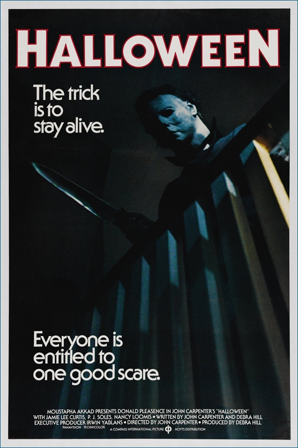Un maniático regresa a su ciudad natal para continuar con la plaga de terror que inició hace quince años.
Halloween 2
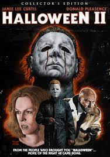El asesino Michael Myers sigue a un blanco herido hasta el hospital el 31 de octubre en Haddonfield, Illinois.
Halloween 3
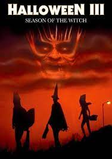Dos personas descubren que un comercial de televisión será la señal para que un psicópata haga explotar unas máscaras de Halloween.
Halloween 4
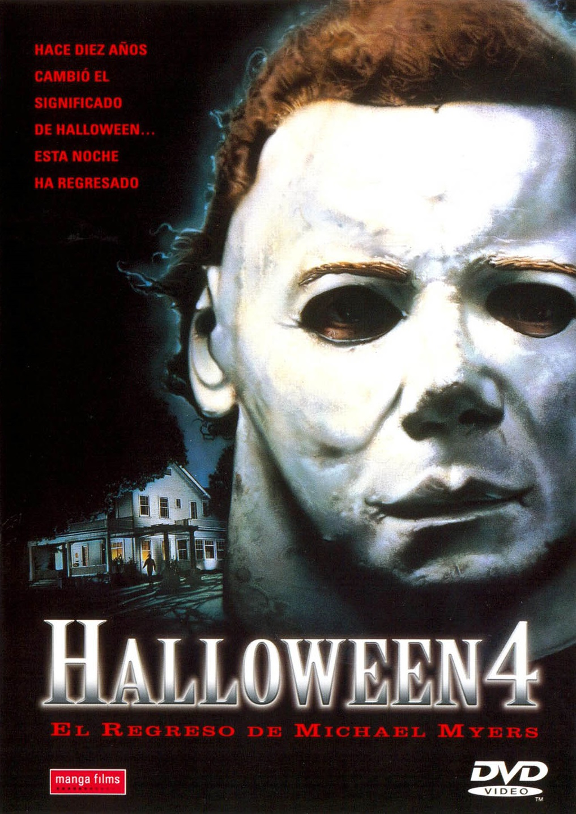Para continuar con sus asesinatos de diez años atrás, Michael Myers vuelve a aterrorizar la ciudad de Haddonfield.
Halloween 5
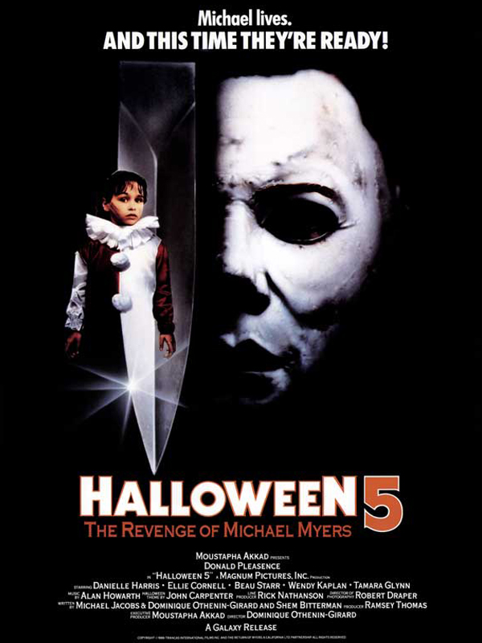Tras permanecer en coma durante un año, Michael Myers despierta y emprende un camino de regreso a Illinois decidido a matar a Jamie, su sobrina, quien ha sido encerrada en una institución mental tras el último intento de Michael de asesinarla.
Halloween 6
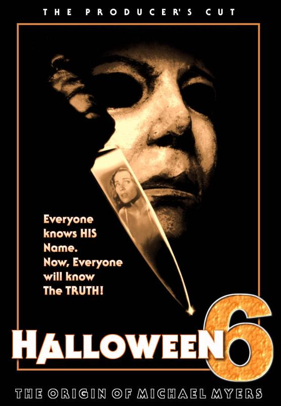En Haddonfield, la noche de Halloween no es una fiesta cualquiera porque durante esta celebración, el psicópata Michael Myers regresa a su pueblo natal con un único objetivo: cometer una masacre.
Halloween 7
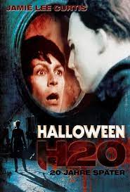Dos décadas después de la masacre de 1978, Laurie Strode, ahora decana de la escuela privada de Carolina del Norte y madre soltera, tomará medidas extremas para proteger a su hijo después de enterarse de la fuga de prisión de Michael Myers, su hermano.
Halloween 8
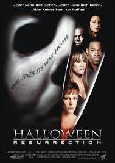Un grupo de adolescentes gana un concurso para pasar una noche en la casa donde creció Michael Myers, el cual será emitido en directo por Internet. Ellos esperan vivir una fiesta y obtener publicidad gratuita, pero las cosas acaban muy mal.
Halloween El Final
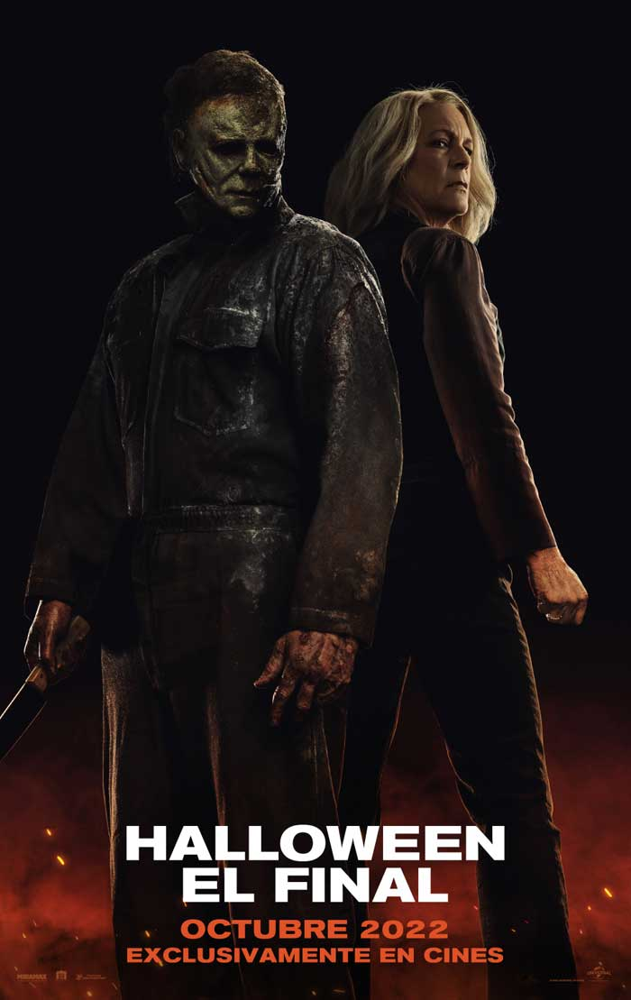Cuatro años después de la desaparición de Michael Myers, el joven Corey lo encuentra maltrecho en las alcantarillas. Poco a poco, se establece un extraño vínculo entre estos dos personajes unidos por la venganza y la locura.
SERIES
Invasión Secreta
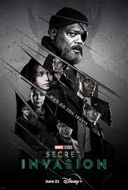Cuando Nick Fury se entera de una invasión secreta de la Tierra por parte de una facción de Skrulls metamorfos, se une a sus aliados y juntos emprenden una carrera contrarreloj para frustrar una inminente invasión Skrull y salvar a la humanidad.
La Lista Terminal
James Reece regresa a casa después de que todo su pelotón de Navy SEAL es emboscado, solo para descubrir que nuevas fuerzas oscuras trabajan en su contra y ponen en peligro a sus seres queridos.
Frontier
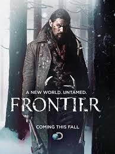Las facciones guerreras compiten por el control del comercio de pieles en el 1700 en un juego despiadado de riqueza y poder.
Santo
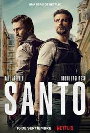Dos policías deben aprender a trabajar en equipo para atrapar al narcotraficante más buscado del mundo, cuyo rostro es todo un misterio.
Leverage
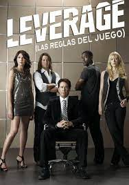El ex investigador de seguros, Nate Ford y su banda de secuaces actúan al estilo de Robin Hoods modernos, ellos se ingenian fraudes elaborados que tienen como blanco a las personas avaras y a la gente corrupta.
Banshee

Después de pasar 15 años en la cárcel por robarle a un mafioso ucraniano, Lucas Hood es puesto en libertad y decide buscar a su antigua amante y compañera haciéndose pasar por el 'sheriff' de Banshee, un pequeño pueblo.
Blindspot
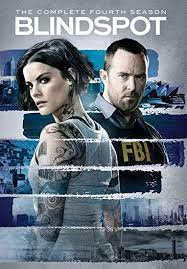Cuando una hermosa mujer sin ningún recuerdo aparece desnuda en Times Square, el agente del FBI Kurt Weller y su equipo descubren que los tatuajes de su cuerpo guardan relación con crímenes que deberán resolver.
Band of Brothers
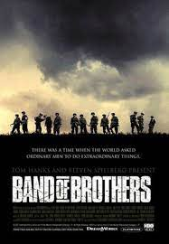Se relatan las experiencias de los jóvenes de la Compañía Easy del 506° Regimiento de Infantería Paracaidista de la 101.ª División Aerotransportada del Ejército de los Estados Unidos.
Marco Polo
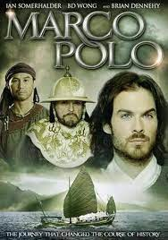El joven Marco Polo se embarca, en compañía de su padre y de su tío, en un viaje épico hasta la corte del Kublai Khan, en lo que hoy en día es Beijing. Una aventura en la que descubrirá tierras y gentes hasta entonces desconocidas.
El caballero Negro
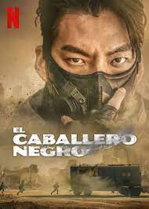En un futuro distópico en el que el mundo quedó devastado por la contaminación atmosférica, la supervivencia de la humanidad depende de un extraordinario grupo de repartidores: los Caballeros Negros.
Espía/Maestro
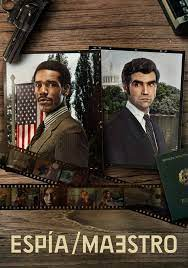Durante la Guerra Fría la mano derecha del dictador rumano es también agente en cubierto de la KGB. Con una única oportunidad a seguir con vida, utilizará un viaje diplomático a Alemania como plataforma para ir a Estados Unidos.
Bienvenidos a Edén
Un grupo de jóvenes van a una fiesta en una isla paradisíaca, pero terminan viviendo un infierno lleno de secretos, peligros y trampas.
Sweet Tooth

En un mundo postapocalíptico, Gus, un niño mitad humano y mitad ciervo, busca un nuevo comienzo junto a Jeppers, un vagabundo con una vida solitaria.
Jack Ryan
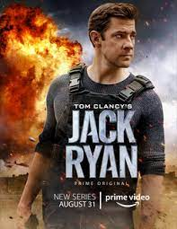El analista de la CIA Jack Ryan se ve involucrado en una tarea peligrosa. El agente logra interceptar una comunicación entre terroristas y se ve obligado a entrar en un mundo despiadado.
Moon Knight
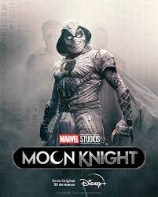Un trabajador de un museo que lucha contra un trastorno de identidad disociativo, recibe los poderes de un dios egipcio de la luna. Pronto descubre que estos poderes pueden ser tanto una bendición como una maldición.